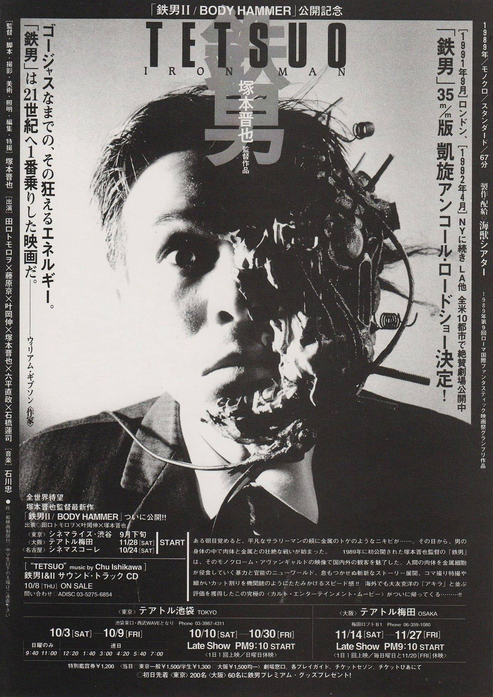
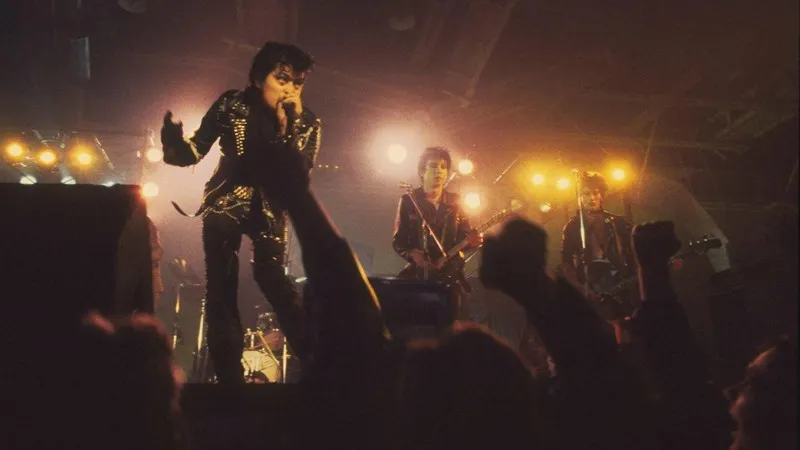

Punk rock'owe korzenie gatunku
W latach 80. i 90. Japonia przeżywała swój boom technologiczny. Coraz więcej urządzeń elektronicznych i nowych technologi napływało z azji, a wizje przysłości ukazywane w popkulturze coraz bardziej czerpały ze wschodu. Azja stała sięnierozerwalnie połączona z rozwojem i przyszłością tworząć nurt który można nazwać techno-orientalizmem. Jednak gdy Zachód zajmował się pytaniami o daleką przyszłość japończycy byli zajęci derastycznie zmieniającymi się realiami gospodarczymi i kulturowymi, w których musieli się odnaleść.
W takich warunkach powstawał gatunek oderwany od romantycznej wizji techno-orientalizmu, wyrastający od razu ze źródła. W filmach live-action jednak przeciwnie do anime nurt ten był krótki, powstający wśród bardzo małej grópy osób a korzenie jego ściśle powiązane ze scenąmuzyki punkowej. Filmem często uznawanym za pierwszy w tym gatunku jest "Burst City", które choć nie porusza tematów ściśle powiążanych z cyberpunkiem to wyznaczył on estetyczny kurs którym późniejsi twórcy silnie się inspirowali. Nakręcony przez Sogo Ishii, był głównie pretekstem do pokazania ideologii ówczesnych punkowsów, przeplatając liczne koncerty znajomych zespołów, a sam film tak jak muzyka był przepełnony energią.

Właściwy kierunek nadał mu dopiero Shigeru Izumija - aktor który grał główną rolę w filmie Ishii'ego, nagrywając "Death Powder". Film sci-fi o trujce spiskowców, którzy kradną androida uwalniającego zmieniającą umysł substancje. Udało mu się tym filmem połąćzyć punkowego ducha wyznaczonego wcześniej z transhumanistycznymi motywami cyberpunku.
By całkowicie się uformować brakowało już tylko jendego filmu jakim jest "Tetsuo: the Iron Man". Shinya Tsukamoto w przeciwieństwie do pozostałych należał do grupy teatralnej Kaiju Theater, a zarabiał kręcąć reklamy. Jego doświadczenia z tej pracy jak i jego relacja z ojcem który uważał żę tylko w ten sposób zdoła sięutrzymać w połączeniu ze zmieniającą się Japonią, popchneły go do nakręceniu tego filmu który jest całkowicie o zmianie, ukazując zwykłego pracownika biurowego którego życie wali się gdy jego ciało zaczyna obrastać metalem. Film ten osiągnął międzynarodowe uznanie będąć pokazywanym na festiwalach, stając się kultowym.
Ostatnim reżyserem, który podjął się nakręcenia filmu w tym gatunku razem z kolegami z zespołu był Shozin Fukui, kóry pracował wcześniej przy kręceniu Tetsuo. W swoim filmie silnie inspirująć się między innymi "Opętaniem" Żuławskiego energię i chaos poprzednich filmó podniósł do ekstremum pchając aktorów do intensywności gry którą trudno gdziekolwiek znaleść. Chciał on przez ten film osiągnąć stan nicości podobnego to Zen, w ktorym zarówno aktorzy jak i widownia przytłoczona napięciem narastającym do punktu ekstazy. Fukui i Tsukamoto eksperymentowali jeszcze potem kręcąć "Rubbers Lover" czy kolejne części Tetsuo będące bardziej jego reinterpretacjami, jednak nurt ten nie trał długo, kąćząć się na powrocie shogo ishiego, który nie opuszczająć jego punkowego tucha nakręcił już pełoprawny cyberpunowy film "Electric Dragon 80 000V" będący idealnym domknięciem.